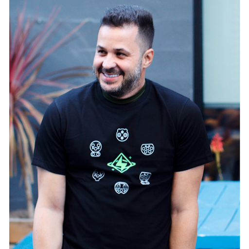

Performance Engineering
Performance strategy, JMeter, workload modeling, NFR analysis, and scalable test plans.
Independent QA leader / educator / builder
Designing better ways to test, teach, and ship software.
Senior QA Lead Engineer · Performance Testing Expert · Professor & Instructor
I help teams build reliable, scalable, and high-quality software through testing strategy, automation, performance engineering, and practical education.

Professional Profile
I am a software quality leader with experience across QA management, automation, performance testing, consulting, and technical education. My work combines hands-on engineering, team leadership, testing strategy, and the design of learning experiences for professionals and students in software quality.
Core Expertise
Performance strategy, JMeter, workload modeling, NFR analysis, and scalable test plans.
Automation frameworks, API validation, regression strategy, and reliable release workflows.
QA management, Testing Center of Excellence, mentoring, hiring, and delivery alignment.
University instruction, bootcamp authoring, certification training, and community workshops.
Professional Experience
Senior QA Lead Engineer
Lead QA efforts across automation, manual testing, defect management, release quality, Agile collaboration, and customer support workflows.
Founder - Team Lead
Founder and team lead building quality-focused tooling and workflows for API testing, performance testing, automation, and software delivery teams.
QA Manager / Sr. Tech Lead / Testing Center of Excellence
Manage QA engineering teams, establish testing practices, lead performance testing, improve automation coverage, and support hiring and technical growth.
Sr. Automation Engineer / Lead
Led automation initiatives, built and optimized functional and performance testing frameworks, coached QA resources, and supported technical interviews.
Performance Test Engineer / Lead
Designed and executed performance, functional, web, mobile, and web-service testing initiatives for enterprise applications.
Test Engineer / QA Manager
Led manual, automated, and performance testing projects, including web and mobile applications, software certification, QA management, ISO 25000, and CMMI work.
Professor & Instructor
As a professor, instructor, and course author, I have designed and delivered software testing education across universities, bootcamps, certification programs, consulting engagements, online platforms, and community initiatives.
Professor Author
Dates pending
QA and Software Testing Bootcamp curriculum design, covering QA fundamentals, test case design, bug reporting, API testing, and practical QA workflows.
Professor / Instructor
Dates pending
Professor of Databases and Software Testing, connecting software engineering foundations with practical quality assurance skills.
Professor / Instructor
2026 - Present
Upcoming academic and professional instruction in software quality, software testing, and related engineering topics.
Adjunct Professor
2007 - 2014
University-level teaching in Databases, Software Engineering, and Software Testing.
Independent QA Training & Consulting
2017 - Present
Professional training and consulting in QA, software testing, performance testing, automation testing, and testing strategy.
Master Trainer and Co-Author
Dates pending
CPTJM-PtU certification content, performance testing strategy, JMeter, workload modeling, and test analysis.
Course Author
Dates pending
Online software testing and quality assurance education for professionals and students.
Founder, Co-Organizer, Volunteer Instructor
2021 - Present
Community education, youth technology development, software quality advocacy, workshops, and technology events.
Projects, Publications & Community
Book Author
A collection of 40 real-life stories of software bugs and the history behind the term "bug."
QA Leader / Sr. Tech Lead
Led quality practices, automation, performance testing processes, and QA team development.
Founder and Co-Organizer
A Southwest Florida tech community focused on empowering youth, supporting tech careers, and promoting software quality.
Tech Stack
Education
Software Quality and Engineering
Computer Science University · Havana, CubaSoftware Engineering
Computer Science University · Havana, CubaContact
Available for QA leadership, performance engineering, consulting, training, workshops, and technical education opportunities.